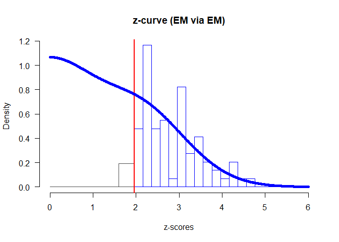

This package implements z-curves - methods for estimating expected discovery and replicability rates on bases of test-statistics of published studies. The package provides functions for fitting the new density and EM version (Bartoš & Schimmack, in preparation) as well as the original density z-curve (Brunner & Schimmack, 2020). Furthermore, the package provides summarizing and plotting functions for the fitted z-curve objects. See the aforementioned articles for more information about the z-curves, expected discovery and replicability rates, validation studies, and limitations.
Installation
You can install the current version of zcurve from CRAN with:
install.packages("zcurve")or the development version from GitHub with:
# install.packages("devtools")
devtools::install_github("FBartos/zcurve")Example
Z-curve can be used to estimate expected replicability rate (ERR) and expected discovery rate (EDR) using z-scores from a set of significant findings. This is a reproduction of an example in Bartoš and Schimmack (in preparation) where the z-curve is used to estimate ERR and EDR on a subset of studies used in reproducibility project (OSC, 2015). Only studies with non-ambiguous original outcomes are used - excluding studies with “marginally significant” original findings, leading to 90 studies. Out of these 90 studies, 35 were successfully replicated.
We included the recoded z-scores from the 90 OSC studies as a dataset in the package (‘OSC.z’). The expectation-maximization (EM) version of the z-curve is implemented as the default method and can be fitted (with 1000 bootstraps) and summarized using ‘zcurve and ’summary’ functions.
The first argument to the function call is a vector of z-scores. Alternatively, a vector of two-sided p-values can be also used, by specifying “zcurve(p = p.values)”.
set.seed(666)
library(zcurve)
#> Please, note the following changes in version 1.0.9 (see NEWS for more details):
#> - The ERR estimate now takes the directionality of the expected replications into account, which might lead to slight changes in the estimates.
fit <- zcurve(OSC.z)
summary(fit)
#> Call:
#> zcurve(z = OSC.z)
#>
#> model: EM via EM
#>
#> Estimate l.CI u.CI
#> ERR 0.615 0.443 0.740
#> EDR 0.388 0.070 0.699
#>
#> Model converged in 27 + 783 iterations
#> Fitted using 73 z-values. 90 supplied, 85 significant (ODR = 0.94, 95% CI [0.87, 0.98]).
#> Q = -60.61, 95% CI[-72.24, -46.24]More details from the fitted object can be extracted from the fitted object. For more statistics, as expected number of conducted studies, the file drawer ratio or Sorić’s FDR specify ‘all = TRUE’.
summary(fit, all = TRUE)
#> Call:
#> zcurve(z = OSC.z)
#>
#> model: EM via EM
#>
#> Estimate l.CI u.CI
#> ERR 0.615 0.443 0.740
#> EDR 0.388 0.070 0.699
#> Soric FDR 0.083 0.023 0.705
#> File Drawer R 1.574 0.430 13.387
#> Expected N 219 122 1223
#> Missing N 129 32 1133
#>
#> Model converged in 27 + 783 iterations
#> Fitted using 73 z-values. 90 supplied, 85 significant (ODR = 0.94, 95% CI [0.87, 0.98]).
#> Q = -60.61, 95% CI[-72.24, -46.24]For more information regarding the fitted model weights add ‘type = “parameters”’.
summary(fit, type = "parameters")
#> Call:
#> zcurve(z = OSC.z)
#>
#> model: EM via EM
#>
#> Mean Weight l.CI u.CI
#> 1 0.000 0.056 0.000 0.445
#> 2 1.000 0.005 0.000 0.374
#> 3 2.000 0.734 0.002 0.999
#> 4 3.000 0.205 0.000 0.640
#> 5 4.000 0.000 0.000 0.000
#> 6 5.000 0.000 0.000 0.000
#> 7 6.000 0.000 0.000 0.000
#>
#> Model converged in 27 + 783 iterations
#> Fitted using 73 z-values. 90 supplied, 85 significant (ODR = 0.94, 95% CI [0.87, 0.98]).
#> Q = -60.61, 95% CI[-72.24, -46.24]The package also provides a convenient plotting method for the z-curve fits.
plot(fit)
The default plot can be further modified by using classic R plotting arguments as ‘xlab’, ‘ylab’, ‘main’, ‘cex.axis’, ‘cex.lab’. Furthermore, an annotation with the main test statistics can be added to the plot by specifying ‘annotation = TRUE’ and the pointwise confidence intervals of the plot by specifying “CI = TRUE”. For more options regarding the annotation see ’?plot.zcurve”.
plot(fit, CI = TRUE, annotation = TRUE, main = "OSC 2015")
Other versions of the z-curves may be fitted by changing the method argument in the ‘zcurve’ function. Set ‘method = “density”’ to fit the new version of z-curve using density method (KD2). The original version of the density method as implemented in Brunner and Schimmack (2020) can be fitted by adding ‘list(model = “KD1”)’ to the ‘control’ argument of ‘zcurve’.
(We omit bootstrapping to speed the fitting process in this case)
fit.KD2 <- zcurve(OSC.z, method = "density", bootstrap = FALSE)
fit.KD1 <- zcurve(OSC.z, method = "density", control = list(model = "KD1"), bootstrap = FALSE)
summary(fit.KD2)
#> Call:
#> zcurve(z = OSC.z, method = "density", bootstrap = FALSE)
#>
#> model: KD2 via density
#>
#> Estimate
#> ERR 0.613
#> EDR 0.506
#>
#> Model converged in 47 iterations
#> Fitted using 73 z-values. 90 supplied, 85 significant (ODR = 0.94, 95% CI [0.87, 0.98]).
#> RMSE = 0.11
summary(fit.KD1)
#> Call:
#> zcurve(z = OSC.z, method = "density", bootstrap = FALSE, control = list(model = "KD1"))
#>
#> model: KD1 via density (version 1)
#>
#> Estimate
#> ERR 0.634
#>
#> Model converged in 141 iterations
#> Fitted using 73 z-values. 90 supplied, 85 significant (ODR = 0.94, 95% CI [0.87, 0.98]).
#> MAE (*1e3) = 0.25The ‘control’ argument can be used to change the number of iterations or reducing the convergence criterion in cases of non-convergence. It can be also used for constructing custom z-curves by changing the location of the mean components, their number or many other settings. However, it is important to bear in mind that those custom models need to be validated first on simulation studies prior to their usage. For more information about the control settings see ‘?control_EM’, ‘?control_density’, and ‘?control_density_v1’.
If you encounter any problems or bugs, please, contact me at f.bartos96[at]gmail.com or submit an issue at https://github.com/FBartos/zcurve/issues. If you like the package and use it in your work, please, cite it as:
citation(package = "zcurve")
#>
#> To cite the zcurve package in publications use:
#>
#> Bartoš F, Schimmack U (2020). "zcurve: An R Package for Fitting
#> Z-curves." R package version 1.0.9, <URL:
#> https://CRAN.R-project.org/package=zcurve>.
#>
#> A BibTeX entry for LaTeX users is
#>
#> @Misc{,
#> title = {zcurve: An R Package for Fitting Z-curves},
#> author = {František Bartoš and Ulrich Schimmack},
#> year = {2020},
#> note = {R package version 1.0.9},
#> url = {https://CRAN.R-project.org/package=zcurve},
#> }Sources
Bartoš, F., & Schimmack, U. (2020, January 10). Z-Curve.2.0: Estimating Replication Rates and Discovery Rates. https://doi.org/10.31234/osf.io/urgtn
Brunner, J., & Schimmack, U. (2020). Estimating population mean power under conditions of heterogeneity and selection for significance. Meta-Psychology, 4.
Open Science Collaboration. (2015). Estimating the reproducibility of psychological science. Science, 349(6251), aac4716.